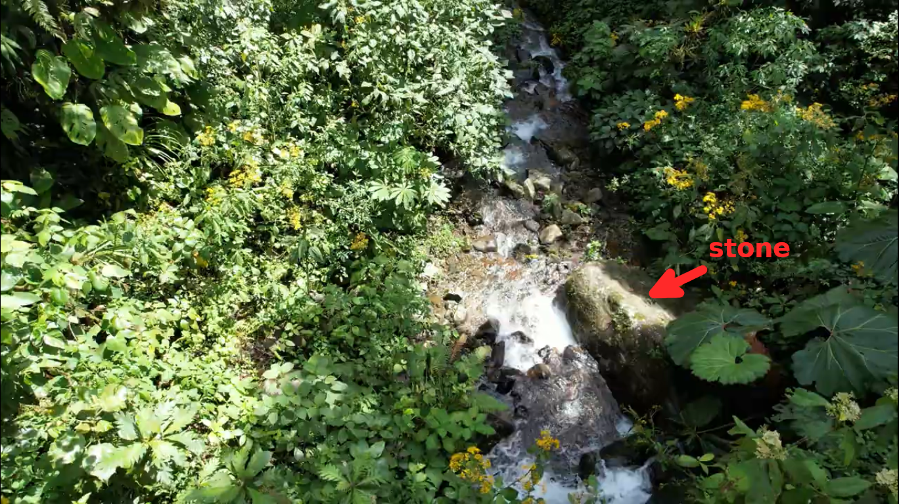
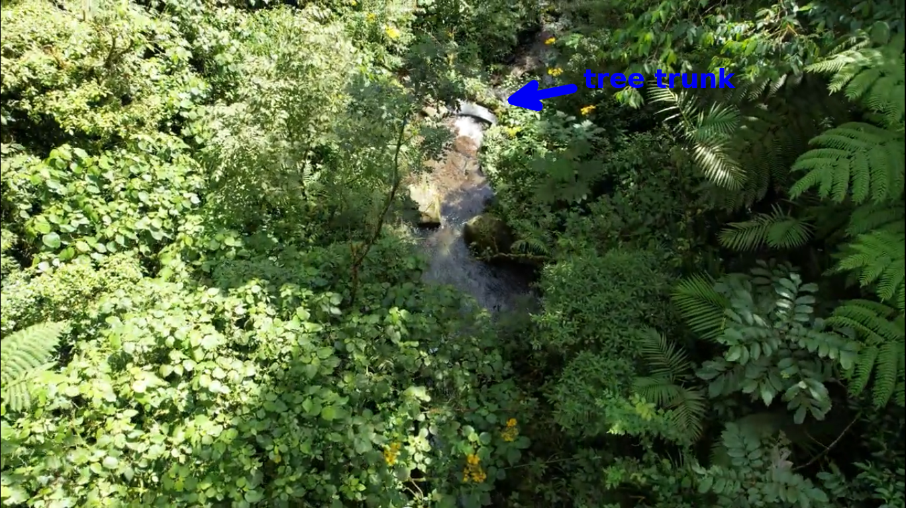
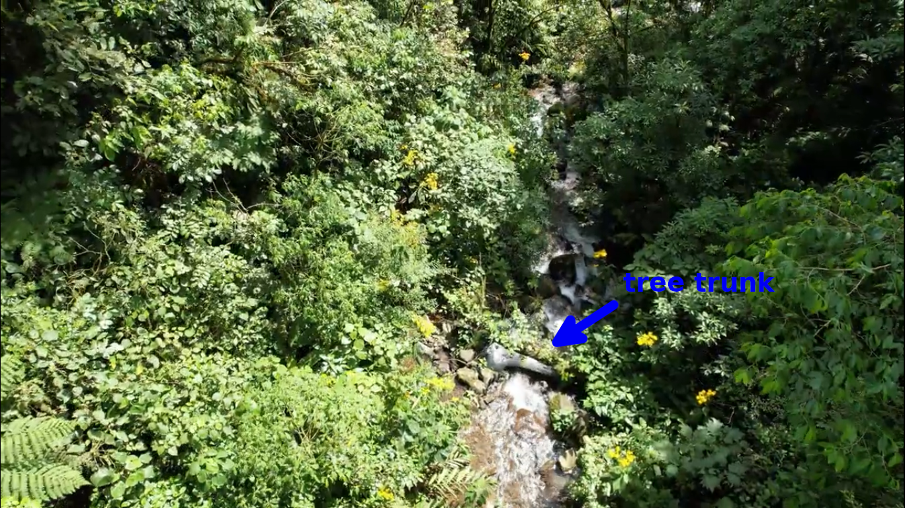

The stream crossing
The article is a continuation of my efforts to find the location of photos 507 and 508.
The photo below shows a comparison of two stream crossings: the stream crossing that RomainC reached during his hike in 2019 (on the left) and the stream crossing in photo 508 (on the right). The left shot comes from the film (0:28). The left shot shows the same stream crossing across which The Imperfect Plan team went during their expedition in 2021. (See the series of articles on the Imperfect Plan web page).
Photo 20-1
The above photo shows two main differences between both shots: 1) the path on the left goes to the right, the slope is small; the path on the right goes to the left, the slope is considerable; 2) there is a large stone in the left shot (on the right); we do not see such a stone in the right shot.
It is sensible to assume that there is another path across quebrada 1. Let us look for another stream crossing.
The below photo combination was made of shots from the film (published on Jan 28, 2015).
Photo 20-2
The site illustrates how the above combination was made. Photo 20-2 was made of shots that were taken from the other side of the stream.
What are common characteristics to the stream crossing in photos 507 and 508? The following photo combination illustrates 3 common characteristics.
Photo 20-2
The characteristics are: 1) the stone by which Kris stands (marked with a red arrow); 2) the rock on the other side of the stream crossing (marked with a pink arrow); 3) a large leave of a plant (marked with a blue arrow).
There is also a tree trunk on the left which is a common characteristic to a drone footage what I explain below.
RomainC, a member of the Imperfect Plan team, has published the drone footage of quebrada 1 (or river 1 - that is what the Imperfect Plan team calls the stream) recently.
The below map illustrates how I interpret the footage. You can find links to some shots from the drone footage on the right. Links are denoted 33:01, 33:09 etc. The corresponding points to those shots are marked on the map.
Photo 20-3
The drone footage was filmed in two ways - from a lower height and from a higher height. The recording from a lower height was being made downstream. The recording from a higher height was being made in both directions.
The shots from a lower height allows you to recognize the details of the terrain better.
The following shots from the drone footage allows you to locate the place visible in the film from 2015:
 2:19 a stone in the stream (a different stone from the ones visible in photo 20-1)
 2:45 a hypothetical location of the place where photos 507 and 508 were taken. The stone by which Kris stands in photo 507 is probably obscured by plants.
 3:13 the tree trunk visible in photo 20-2
The location of the place in photos 507 and 508, the location of the Imperfect Plan stream crossing are marked in the following photo (33:38 minutes of the drone footage):
Photo 20-4
Both stream crossings are obscured by plants in the above photo.
Another shot (33:42) shows locations of both stream crossings (obscured by plants) and the location of the stone visible at 2:19 minutes of the drone footage:
Photo 20-5
The below shot (33:44) shows the location of the Imperfect Plan stream crossing (obscured by plants) and the location of the stone visible at 2:19 minutes of the drone footage:
Photo 20-6
Based on photo 20-4 we can determine approximate coordinates of the hypothetical location of the place in photos 507 and 508. It is shown on the following map:
Photo 20-7
The coordinates of the two stream crossings: 1) the location of photos 507 and 508 8.84293083334,-82.4244834735 2) the Imperfect Plan stream crossing (see the web page) 8.842443991,-82.42469198 . The distance between the two places is 58.5 m according to the web page.
A satellite map of the two places:
Photo 20-8
There is no direct evidence that the place that I found on the drone footage is the location of photos 507 and 508 because plants obscure the place but that is a place worth to explore. My idea is that the stream crossing across which the Imperfect Plan team went in 2021 is not the location of photos 507 and 508. My hypothesis is that the place indicated above is the location where photos 507 and 508 were taken.